I’ll try anything once, twice if I like it, three times to make sure.
I like alcohol. As for any drug if you’re going to do it, do it sparingly and make it count. Here’s how.
Whisky
Distiller’s edition
An excellent series of whiskys matured once, then put in a different cask, generally of something rather flavourful like port or madeira, to mature again. When they get it right, it’s really really good.
- Distiller’s edition Lagavulin (fantastic),
- Talisker, Oban, Cragganmore, and Dalwhinnie are universally good (Dalwhinnie is quite a sweet whisky, but the Distiller’s edition has a dry note which works well).
Peaty
I suggest:
- Lagavulin Distiller’s edition (see above),
- Ardbeg Uigeadail (tastes of tar, but in a good way),
- Lagavulin special release 12 (thoroughbred peaty whisky),
- Caol Ila 18 (subtle, best dilute it), and
- Ardbeg 10 (simple, direct, peat).
- Isle of Jura Supersition is smokey and smooth, almost chocolatey, if you can bear the cringe-making packaging (it peels off).
- No Laphroaig has anything to be ashamed of and it’s cheap, and the quarter cask is nice if you like the taste of, well, wood.
Sweet
- Strathisla 25, Mortlach Signatory 1991, and Auchroisk Rare Malts 28 are just fantastic.
- I also suggest Bowmore Dawn and Dusk which taste of violets (I can’t get over that; how come violets?).
Easy drinking (and good for presents)
- I suggest Bruichladdich 15 and the Balvenie doublewood.
- The Glenfiddich 21 gran reserva blend is an exceptionally good blend which hits the full octave of tastes.
- Isle of Jura Superstition is notably peaty, but not so aggresive as to be intimidating to, say, a friend who isn’t used to whisky.
Cash better-spent on something else
I shan’t list here all the whiskys I’ve drunk that I didn’t like. However, a few notes may be useful.
- Scapa is apparently in vogue after years of neglect — neglect was right.
- I cannot recommend Bowmore Enigma. It’s a peaty Bowmore and I fear the peat and their signature violet note just don’t make a good harmony.
Beer
I’ll put a light Dutch blonde in my mouth and enjoy it, but really I prefer a strong silent Belgian. The list below reflects this preference:

Achel Brune trappist 8%
Gassy (medium bubbles and lots of them). Tastes of flowers, roses. Sweet first, then bitter aftertaste.
Buy.

Gulden Draak 10.5%
Medium bubbles and not many of them. Floral leafy taste, like rosemary (I'm not making that up). Strong aftertaste of pure alcohol.
Buy.

Trappistes de Rochefort 10 (11.3%)
Surprisingly light-tasting.
Buy.
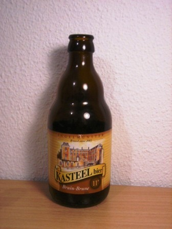
Kasteel bier bruin 11%
Sweet turning slowly to slightly bitter very solid on the tongue. Three sips and my legs buckled; drink sitting down. Sugar added and you can taste it. Cough syrup. Medium bubbles.
Don't buy!

Hoegaarden grand cru 8.2%
Mouldy taste turning to sour then bitter. Rather nice. Frothed greatly when opened (had it been shaken?) but then fine bubbles and relatively flat.
Buy.
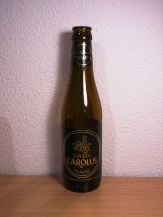
Gouden Carolus Classic 8.5%
Medium large bubbles, pleasant feel on palate. No taste at first, then hint of bananas and lingering aftertaste of burnt toast. Nice.
Buy.
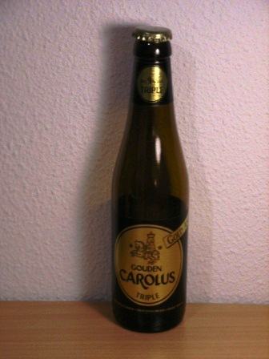
Gouden Carolus Triple 9%
First apples, then marmite. But they make it work! Delicious.
Buy.
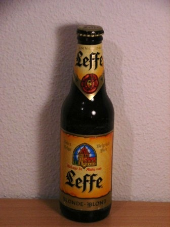
Leffe Blonde 6.6%
I discovered belgian beer one summer's day in Lozère, south of Paris — and it was a Leffe. Ah, that sweetish taste of rotted grain! Yes, Leffe tastes of rotted grain. I find that commendably honest since that's what beer is.
I tried the brune and didn't like it. Try Chimay, or indeed almost any other beer on this page.
Buy.
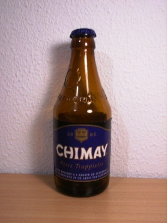
Chimay Blue 9%
A (the?) classic belgian dark beer. Not clearly `the best' by any means, but the best-known and a yardstick for the others.
They do weaker versions in brown and white, which don't work; I see a monk doing his best, but just unable to grasp the concept of a not ridiculously strong beer.
Buy.
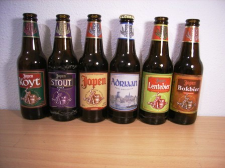
The Jopen Collection
Dutch beers brewed in Haarlem. A set of lovely and interesting beers; watch out especially for the four-grain beer. Hard to get hold of.
Buy, where possible.
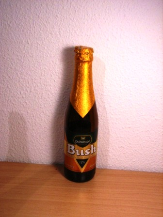
Bush 12%
Bubbles followed by sugar and vodka. Not bad actually, but for the same money you can get better. They fortify it with sugar to bump up the alcohol.
Don't buy.

Guinness special export 8%
Sweet at first with a long bitter aftertaste. Creamy and foamy on the tongue, but not gassy; lots of small bubbles. How to describe the taste? Charred nougat? Certainly, very nice.
You can find this in the off-licenses in London, so if you're passing through and want a quick and pleasant and nourishing way of falling asleep in a hotel room, you could pick up a bottle of this.
Years after tasting this beer, I met the daughter of the brewer responsible for it on the train up to Edinburgh.
Buy.
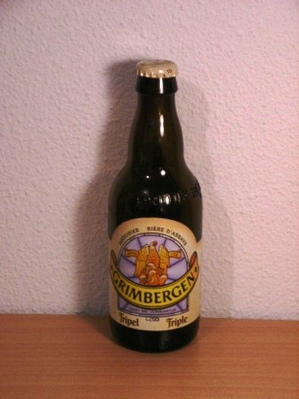
Grimbergen tripel 9%
Very strong yeast taste, but not salty. Many bubbles but somehow not gassy. Aftertaste of toast and then yellow melon.
Buy.
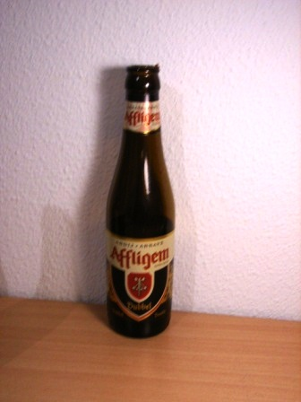
Affligem abbaye dubbel 6.8%.
Your classic nutty beer taste. Traditional and very nice.
Buy.
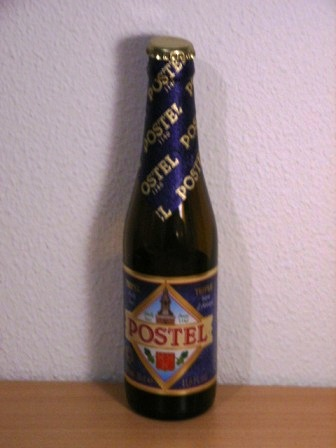
Postel triple 8.5%
Sweet and foamy without being gassy. Very pleasant indeed, but not much actual taste.
Buy.
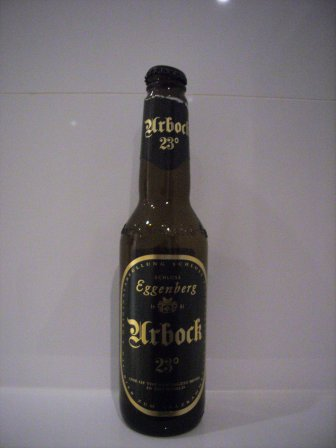
Urbock 9.6%
The Germans simply made it illegal to fiddle with beer, e.g. by adding sugar — so you can trust it to be wholesome stuff. Urbock is excellent, more bitter than your usual Belgian beer, but just as solid and nourishing.
Buy.
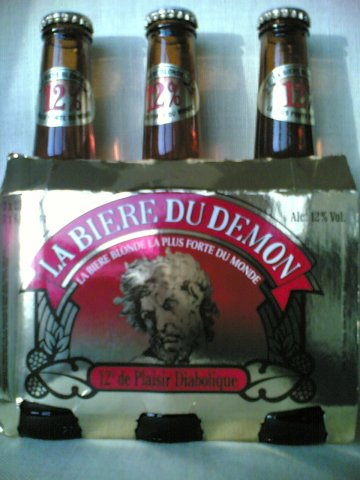
La bière du démon 12%
I was travelling in Milan and dropped by a supermarket and saw this extremely strong french blonde. I generally find blondes too gassy and light, but this one foams up on the tongue with perfect discretion and has a good body. The label says they didn't add sugar; so apparently the body is natural, too.
And the taste? Roast beef, or barbecue flavoured crisps.
Buy.
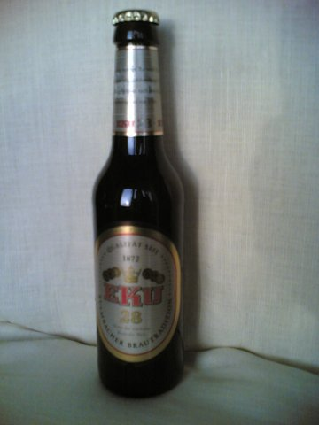
Eku 28 11%
Excellent. A german brown beer. Takes being a beer very literally: incredibly strong malt; sweet, not bitter. Lovely solid foam which avoids being gassy. Well-made and solid.
Buy.
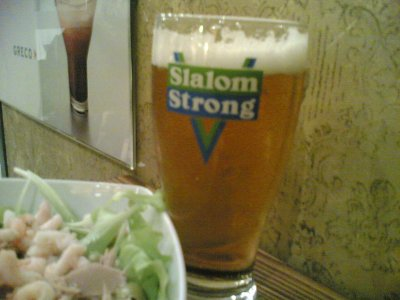
Slalom strong 9%
Light but strong beer. Relatively flat but foams nicely on the tongue. Tastes of fruit-flavoured chewing gum (and beer). Pretty nice, and goes well with a tuna salad in a cafe in London.
Buy.

Carlsberg special brew 9%
Strong taste of marmite, quite salty but not too much. Turning to sweet, then a pronounced bitter finish at the back of the mouth and top of the throat. Becomes metallic on the third or fourth mouthful. What lets this beer down is the bubbles, which are too big and sharp.
Not that bad, considering.

Challenge super brew 8.5%
This beer has great bubbles and a nice texture on the tongue --- but no taste. It doesn't even taste of water.
Not an unpleasant swallow if it's the only thing going.

Tenent's super strong lager 9%
Lots of alcohol (it's sugared). No taste.
Waste of time. Those wishing to kill themselves with alcohol may find supermarket vodka or gin quicker and more cost-effective.

Ceres Strong Ale export 7.7% (Danish)
Ceres is a goddess of grain crops; what a lovely name for a beer.
Foams up nice and evenly without being gassy. Unexpected fresh sweet taste of apples, then hops so mild they tasted of pure liquirice, bitterness on the back of the tongue --- and then the apples come back and stay for ages. How extraordinary. Not at all what I expected.
I picked this up in a corner shop in Venice, so whenever I taste it it transports me right back there. Now if you think that going to Venice and drinking Danish export ale is a waste of time then I have to say ... I must be à la recherce du temps perdu.
Really rather nice.

Ceres red erik 6.5%
What a strange drink! Almost flat, sweet with the same taste of apples as the 7.7%, so it tastes of cider. But also a saccharine note which reminds me of orbit apple-flavoured chewing gum.
It's beer, but not as we know it. Drinkable.

Trap40 8% (belgian)
Gassy. Tastes of metal when fresh, and tastes of grass when flat. Worryingly, I prefer it flat.
Avoid.

Bulldog strong ale 6.3% (British)
Sweet, then hops. Nice to drink but there being no subtleties of flavour.
I had it with meals.

Sans souci export 5.6%
Great head of foam, no taste.
Don't buy.
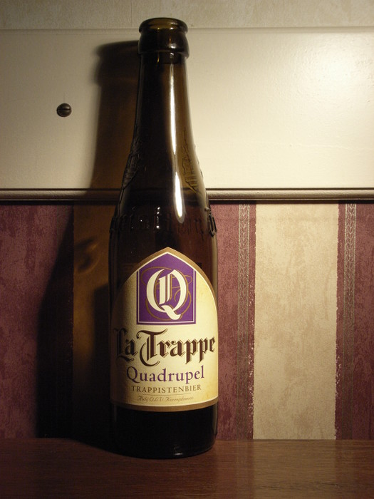
La Trappe Quadrupel 10%
I really like this one. It's a blonde but at 10% alcohol anything gets that meaty solidity that I like. This one is wonderful; it foams up nicely (lots of little bubbles), and it tastes of fresh green apples. Not salty, not bitter.
A lovely drink.

Grimbergen Optimo Bruno 10%
First tasting. Very sweet (perhaps too sweet), very malty, not bitter at all. foams up perfectly in the mouth with big bubbles which nevertheless are kind to the tongue. Tastes like malt beer, but very alcoholic.
Second tasting. This beer tastes of bananas and marmite.
Very sweet, very nice.

Delerium tremens 8.5%
Fun packaging and cool name, and not a bad drink, but they sugar it to bump up the alcohol though and you can tell.
Avoid.
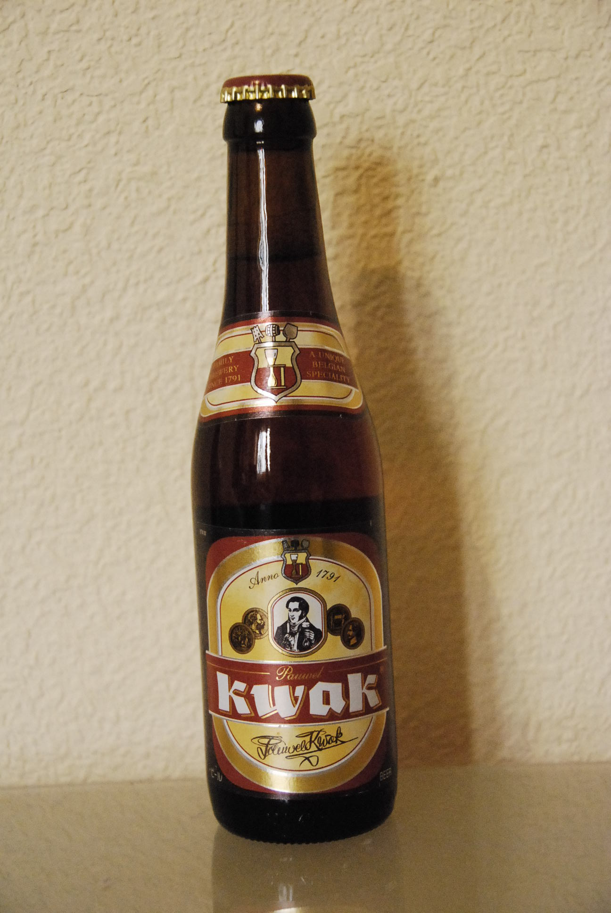
Pauwel Kwak 8.4%
So which is more ridiculous: the name, or the glass they serve it in? But the beer is lovely.
Buy.

Bavaria Special Blond Beer 8.6%
A beer equivalent of Asti. Sweet, gassy (but pleasantly so), and tastes of fruit. Apples.
Nice.

Pietra Biera Corsa a Castagna 6%
They add chestnut flour to the mix. This gives the beer a very slight smokey taste, fading to a meaty aftertaste. That's nice, but unfortunately the base beer is too light and too gassy, so overall the drink disappoints.
Happy to have tried it once.
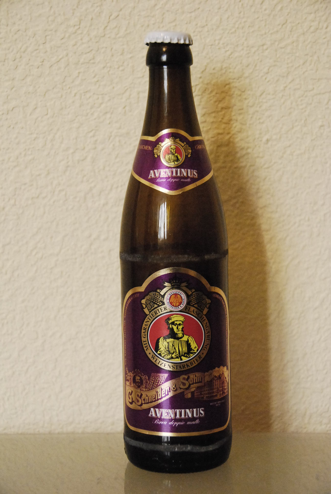
Aventinus German beer 8.2%
A wheat/barley beer. Unfiltered, unpasteurised, sweet, slightly sour, floral. It smells of lemongrass. Not bitter at all and has little aftertaste. A bit fizzy and harsh on the tongue; it does not attain creaminess on the tongue.
Good taste, imperfect texture.
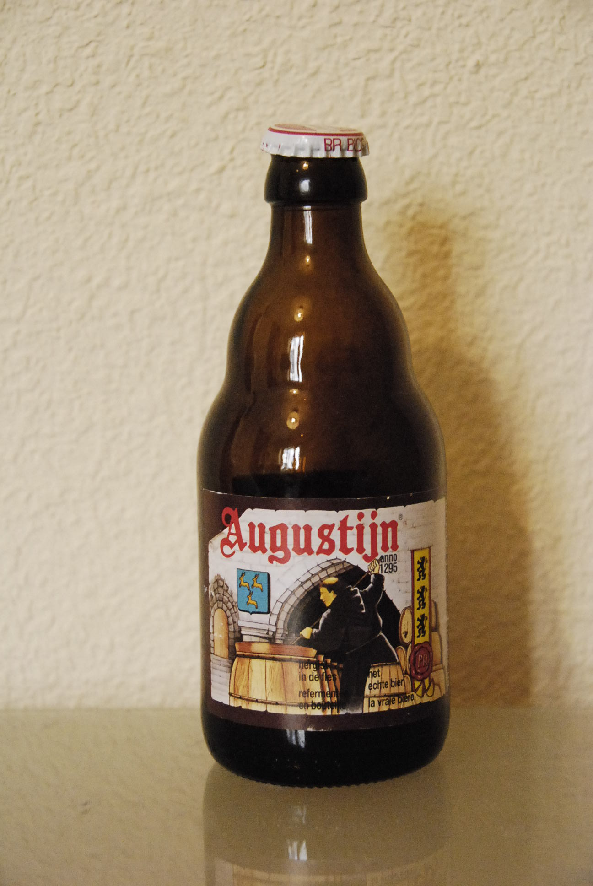
Augustijn 8%
Very fizzy. Puts out huge bubbles. Don't worry; they do not attack the tongue, but they do climb up your nose if you're not careful. A surprisingly light beer with a faint smell of salami, camomile, and with a mild bitter hops aftertaste.
Quite nice.

Rigas 7% Latvian strong beer
Flat-ish, then slow foam, full, vinegar, very bitter. Starting at the back of the mouth and working forward, almost to orange peel. Very slightly cloudy. A knock-out.
The photo is an action shot of The Bottle vs. my friend; the bottle won, and rather quickly.
Nice to drink, though you may not remember that afterwards.
Other beers
I have no photographs or tasting notes for the following beers. I write from memory:
Boddingtons
The cream of Manchester! A good drink.
Asahi seaweed
Familiar worldwide from japanese restaurants. The Japanese do drink it too; it’s not just for export.
Light and thirst-quenching, it’s poles apart from the Belgian brunes.
It seems that as a courtesy, Japanese hotels provide a machine dispensing Asahi in half-a-dozen flavours at very reasonable prices (under one pound) for 500ml. While I was there I climbed stairs for forty minutes before bed to keep fit (while reading a good book). An Asahi seaweed flavour beer after that, was perfect.
Bavaria alcohol free
Tastes of Asahi seaweed flavour beer. Alcohol-free beer has image problems — but this stuff is nice.
La chouffe
A dutch trappist beer. For me, it doesn’t work. Too light, too gassy.
Van der Heijden (Eindhoven)
I bought many beers in Van der Heijden. The owner is crazy about whisky and knows his wines too — and so do all his staff. They thought I was silly buying all those boring beers; they take good beer for granted, being not 60Km from the Belgian border. A good place, with genuine spirit for the bottle!
Other beverages
Grappa
Ever tried it? It’s hilarious; it’s no stronger than whisky, yet it tastes like pure ethanol, infused with a piece of (old and mouldy) parmesan. It was a poor man’s drink made of grapeskins left over from wine production — pure rotgut — then someone had the bright idea of sponsoring a literary prize and selling the stuff in handblown bottles. Prices trebled and fortunes were made. Personally, I rather like it. I also use it to put myself to sleep in airplanes.
Thanks to Ugo Montanari and Furio Honsell for introducing me to it.
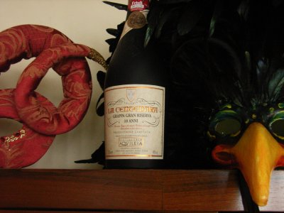
Centenaria gran riserva 10 anni (46 percent)
If you see this bottle, buy it!
Brew it, distill it, soak it in oak while you bring up a child ... It works for whisky and it works for this. It is exceptional. I had a shot in Oniga in Venice and immediately bought the bottle it came from. They did me a nice price too.
Sake
In an airport in Japan I once witnessed a roundeye asking very seriously which Sake (of the huge
selection) was ‘good’
. Don’t bother. I’ve tried loads, and though there are
differences, they’re universally lovely. It’s not like wine where if you get it wrong
you get antifreeze. Or maybe you do; anyway, it tastes good.
And what does it taste of? Actually, ethanol and parmesan. But in a good way. They sell it in glass bottles of course, but did you know they also sell sake in little tetrapacks with straws, like what you put in a kid’s lunchbox (though not in the airport)?
Pure alcohol
In Italy you can buy pure alcohol in the supermarket; to them it’s just an ingredient for making sweets, like icing sugar.
What to do with Jack Daniels
Half-fill a large jam jar with a cheap whisky, Jack Daniels will do nicely. Run a thread through an orange. Seal the jam jar, using the thread to suspend the orange above but not in contact the spirit. Leave in a warm place for a month.
By evaporation and recondensation the alcohol draws the flavour out of the orange, and makes a lovely, subtle liqueur. Tasty!
(Recipe: Alba)
What to do with Gin, Vodka, or Rum
- Throw in lots of green chillis. Leave for a month. Serve as spirit shots, down in a single gulp. (Recipe: Mike from the Buffalo Bar)
- Throw in a stick of vanilla. Leave for a month. Sip slowly. (Recipe: me)
- Throw in a stick of cinnamon. Leave for a month. Sip slowly. Best with rum. (Recipe: me)
- Mix one part egg yolks and one part demarera sugar dissolved by warming in milk (or sweetened condensed milk). Slowly mix in one part gin. You’ve got Advokaat. Do not add alcohol directly to the egg yolks, they’ll curdle. (Recipe: me)
Cheese
Unlike bottled beverages, you can smell a cheese, even taste it, before buying. So the reader doesn’t need any suggestions from me — except perhaps …
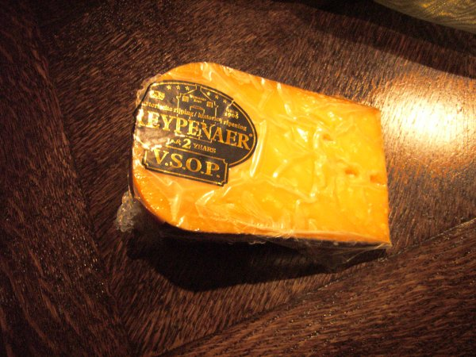
Reypenaer
If you're in Amsterdam airport pick up a Reypenaer. I don't like dutch cheeses; too much like the plastic they're wrapped in. However, this one's good. The taste? Marmite.
In a dutch market ask for Gouda number 6; very similar. In general, ask for an overjarig (matured for at least two years). It should contain tiny salt crystals.
Tastes of marmite. I like marmite.

Scamorza affumicata
A speciality of Puglia (the heel of the Italian boot). Tough, chewy, smoky texture: a cross between smoked salmon, mozzarella, and a steak. Drop it in a pasta sauce and you've got a meal. Not to be confused with the unsmoked scamorza bianca.
My favourite Italian cheese for cooking.
The British are modest to a fault about their cheeses; only Stilton is internationally recognised and I suspect this is only because once opened it's impossible to ignore. Aside from that, UK supermarkets are a Cheddar hell (though things have improved somewhat in recent years). But there are excellent cheeses to be had — and of a kind quite unlike those on the continent.
Light, slightly acid, hard and crumbly, Wensleydale is, so I opine, the finest representative of a breed which includes Leicester and Cheshire cheese. UK goats cheeses are also excellent. Visit a farmers' market on a Sunday morning — and the farmers need all the help they can get. rec: A fine cheese from a fine county.
Disclaimer
I’ve never been drunk — I drink for the taste. I did once become distinctly lightheaded, the day I nosed grappa at less than three feet and not through a wire mesh.